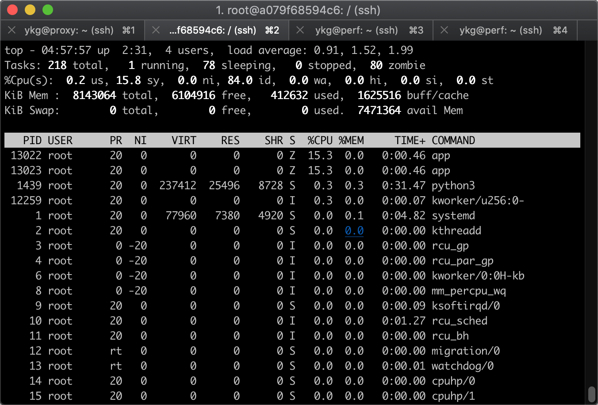

Linux性能优化-实验报告07
1 | docker run --privileged --name=app -itd feisky/app:iowait |
1 | root@perf:/home/ykg# ps aux|grep app |
S: 中断睡眠状态
D: 不可中断睡眠状态
s: session leader
+: is in the foreground process group
进程组表示一组相互关联的进程，比如每个子进程都是父进程所在组的成员
会话是指共享同一终端的一个或多个进程组
1 | top - 02:33:31 up 7 min, 1 user, load average: 55.92, 21.33, 7.94 |
看到iowait都接近100%，负载高达几十，但是没有实验参考的zombie数量增加
1 | root@perf:/home/ykg# dstat 1 10 |
执行top命令，找到一个pid为3419的状态为D的app进程。操作已经非常卡顿，响应时间很长。
1 | root@perf:/home/ykg# pidstat -d -p 3419 1 3 |
执行
1 | pidstat -d 1 20 |
只看到输出大量内容，大量的app进程、appport进程。有IO read，但不高，大都在几百kB，少量是在1k kB ～ 4k kB。没有出现作者给出的例子中的那样高达32M的。
1 | root@perf:/home/ykg# strace -p 6569 |
无法复现实验中的情况
perf record -g
perf report

1 | # 首先删除原来的应用 |

1 | root@perf:/home/ykg# pstree -aps 13122 |
1 | $ docker rm -f app |